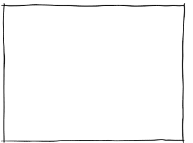
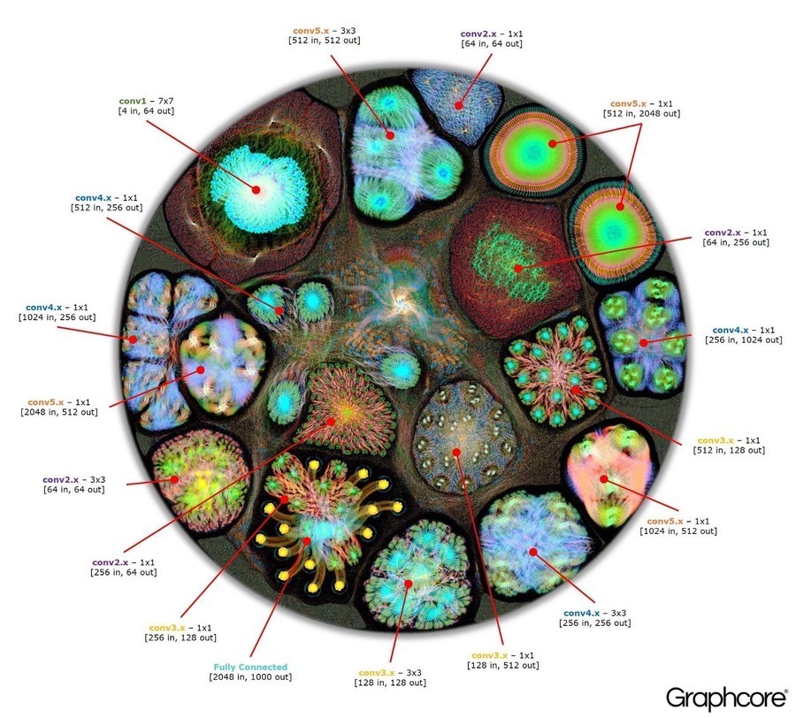
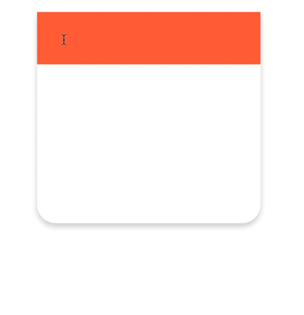
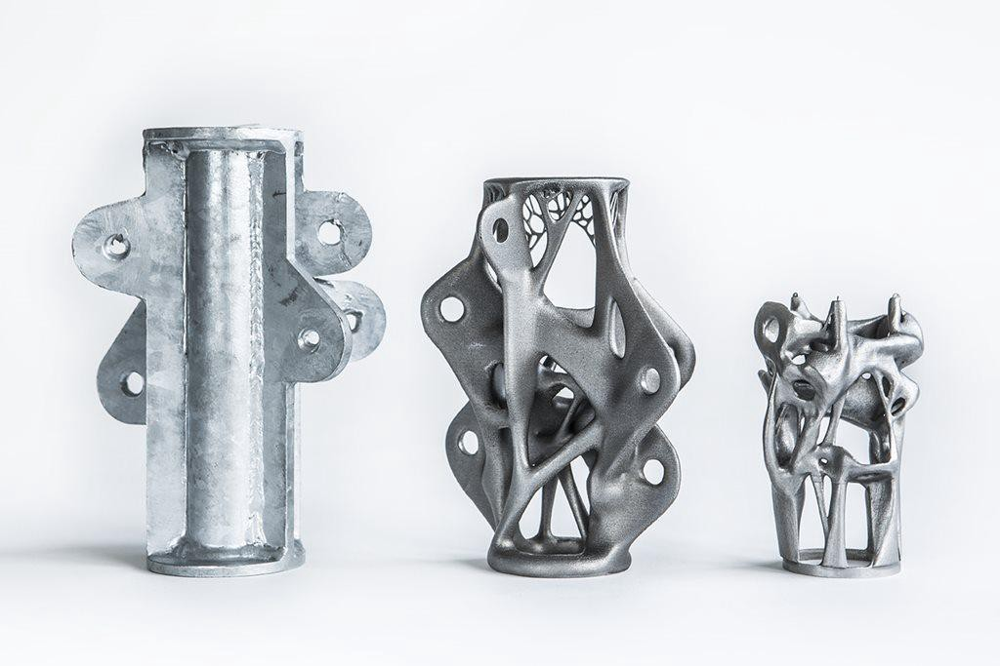

What are the ways Artificial Intelligence and Machine Learning will shape our design practice?
When looking at the balance between process automation and creative augmentation the conversation gradually falls into the category of tools, how they are made, and how they shape us.Being from a background in digital interface design, I saw a ripe opportuntity to investigate the nature of digital tools and where we as designers would begin to accomodate Artificial Intelligence and Machine Learning.
A digital tool is anything that converts a set of low-level actions into a single high-level action.
For example, a rectangle tool takes the low-level actions of drawing perpendicular and parallel lines, and converts them into a single dragging motion from one point to another. Digital tools in that way are extensions of our own abilities.

What we must remember is that for every extension, there is an amputation.
With digital tools, we extend our abilties in one direction, while amputating them in another. With the rectangle tool, we may gain an efficeincy in drawing accurate geometry, but in the process we lose our ability to add character to each line, fill, and stroke.

Artifical Intelligence and Machine Learning are tools for modeling the world around us.
With AI/ML we can understand and model complexities with ease, at the cost of failing to understand how our computers arrive at such conclusions. AI/ML performs completely at the whim of the data is trained on, meaning that the world model it creates is also subject to the bias we both intentionally and unintentionally inject into our data.

How will Artificial Intelligence and Machine Learning alter our tools and process?
Design is practice that relies on a set of small actions to achieve a whole. We perform a set of low level actions around aesthetics and interactions that create emergent traits of trust, efficiency, aesthetic novelty, and clickability. But what if these small actions were automated?

Models that manipulate abstract variables, will dimish our understanding of the decisions they make.
Artificial Intelligence is a technology based on the ideaology of a "one true answer." The artifacts they generate are not holistically designed, but rather numerically optimized to fit the parameters defined for them. For AI/ML the focus is not on organic balance, but the optimization of various factors, however grotesque that may be. With the amputation of our fundamentals, we have no choice but to trust these optimized answers.This is Vanguard, a specualtive software meant to investigate the negative potenial of AI in Design.
Vanguard uses a set of fictional models based on a variety of design tropes we use on a daily basis. As modules are added, the software begins trying to optimize for a larger number of factors. As one progresses through the video, the output becomes more grotesque and chaotic as the software mindlessly designs to fit it's criteria.Tap the video to begin playing.